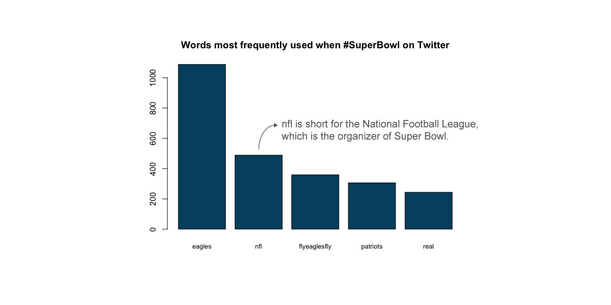
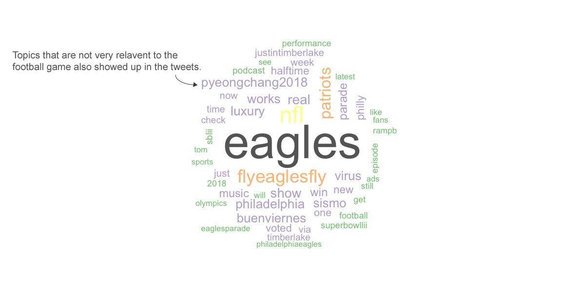

Why #SuperBowl
It has been almost a week since Philadelphia Eagles won the annual national football game of the US over New England Patriots.
After the heated match, the popularity of hashtag #SuperBowl on Twitter raised 33% from Feb 5th, according to the Twitter hastage analysis page hastagfy.
One of the most expected and celebreted game in the US as it is, on wonder Super Bowl would draw such big attention on social media, with an overall popularity of the hastage is 74.1 over 100. But since it's been one week already, what are people talking about on social media at this time?
Using R to access Twitter API, it's clear that people are still celebrating the victory and chewing some of the best moments of this year's game.
Getting 4469 recent tweets on twitter, the word count result shows that winning team and their fans are dominent the social media with various celebrating words and slogan, as the total number of "eagles" and "flyeaglesfly" overrides the number of the rival "patriots".
Also, there's no surprise to see "nfl", which is short for The National Football League, the host of the games, to be trendy recently.
Given that Eagles belongs to the city of Philadelphia, the winning celebration atomosphere on Twitter becomes more obvious when look at the word cloud of the tweets, with many popular hashtags to be "win", "parade", "philadelphia" and "philly".
Performace before the match, which has become one of the nation's tradition, was pretty hot on Twitter as well. Singer Justice Timberlake, the words like "performance", "show" and "music" are all visible on the chart.
However, part of the reason why Timberlake is a hot word now may because of something else on the performance, this would be explained later with specific tweet.
To take a closer look at the differences between the two side of the game one week after the final, below are the word cloud of the tweets that go with hashtag #patriots and #eagle respectively.
The tweets with #eagles are more about celebration. The slogan took a great part of all the text tweeted with #eagles. "Champion", "win", "eaglesnation", "best"...words like these were frequently seen.
The team members who contributed to the victory, like Jason Kelce and Nick Foles, were also mentioned in the tweets as fans cheers for their performance in the game.
On the contrary, #patriots has few words on the game. Patriot as a word also give the feeds many political phrases and topics on Twitter.

Look as American sports industry as a whole, among the four most popular national leagues, football (Super Bowl) has the biggest attention from the media. The numbers Super Bowl were mentioned on the New York Times were much higher than the rest of leagues, include NBA.
However, the coverage of Super Bowl experienced a sharp decline on 2013, while the other three leagurs' coverage raised since then.
Due to the election and heavier global terrorists, year 2016 was a cold time for sports reports in general.
The #SuperBowl selfie kid is here! And guess who surprised him again?! My friend, @JTimberlake. pic.twitter.com/0KOU90qjwC
— Ellen DeGeneres (@TheEllenShow) 2018年2月9日
Among all the tweets, the one who received the biggest number of retweet so far is the #selfiekid on The Ellen Show, which is one of the most popular TV show of the US.
In the show, the host Ellen invited the boy who became famous and trending on social media recently after he took a selfie with well-known singer Justin Timberlake on the Super Bowl final match.
Timberlack walked to the audience during his performance before the match, then stoped by the side of a 13-year-old boy. The two ended up in a selfie that went viral.
Another popular tweet with the hashtag SuperBowl this week is a tweet from a fan of the winning team - Philadelphia Eagles
Dan Goines (twitter name) posted a picture of him beside the gravestone of Willie Jerome Brown III, who was one of Eagle's premier defensive tackles back to 1990s. Brown died at the age of 27 in 1992 due to car accident.
Putting a T-shirt that has "Super Bowl Champain" on the stone, the post successfully called back fans' emotion for the team's first win since 60 years ago and received thousands of retweets and likes.
Last stop...They PHINALLY brought it home Jerome! @sethjoyner @Eagles #Eagles #SuperBowl Champs! #FlyEaglesFly pic.twitter.com/I3oBlTonrg
— Dan Goines (@DanGoines) 2018年2月10日